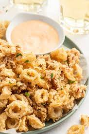

Calamari

Description
A classic seafood staple.
Serves 4-5 people.
Ingredients
- Calamari
- Melted Cheese
- Eggs
- Melted Cheese
- Garlic
- Mayonnaise
- Cucucmber
- Leafy Greens
Steps
- Place calamari in boiling salted water (1kg calamari, 2L water, 20g salt)
- Return to boil and boil on low heat for five minutes
- Remove, cool, and chop calamari into strips
- Peel and chop garlic. Mix with mayonnaise
- Chop cucumber into strips and finely chop eggs, grate cheese, finely chop the greenery
- Place the calamari, cucumber, eggs, cheese, greenery, and mayonnaise with garlic into a salad bowl
- Mix carefully
- Bon appetit!